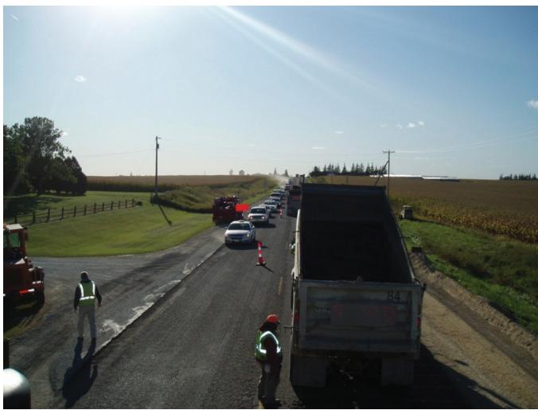
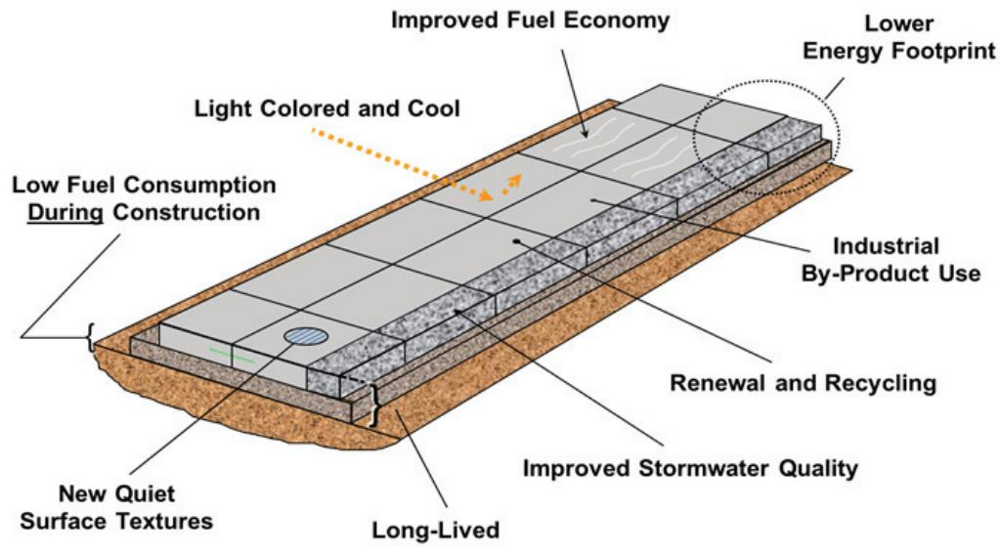
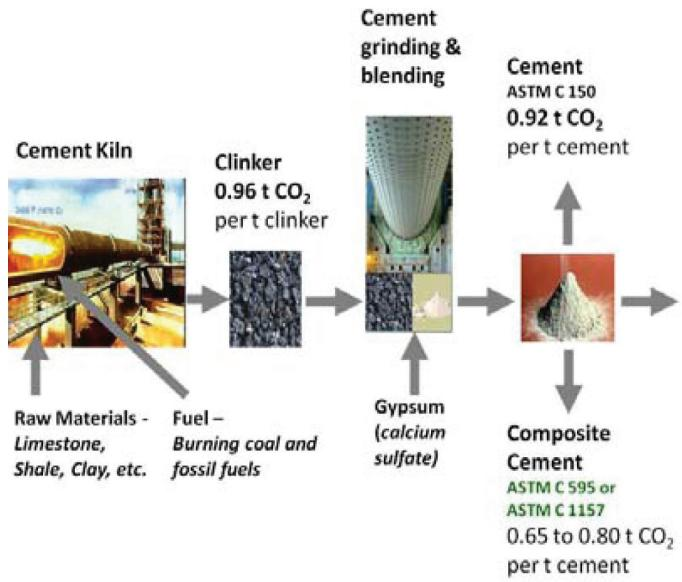
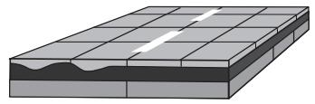

Construction Operations and Material Use in Sustainable Concrete Pavement
Construction Operations and Material Use in Sustainable Concrete Pavement is a decision‑support framework that assists agencies, owners, engineers, material suppliers and contractors in choosing construction methods and materials that satisfy sustainability goals while preserving the long‑service‑life quality of concrete pavements [2][4]. It requires life‑cycle data on energy use, greenhouse‑gas emissions, water consumption, waste generation and cost, and evaluates alternatives such as low‑emission cements, recycled concrete or asphalt aggregates, optimized aggregate gradations and two‑lift construction sequences that can be implemented within budgetary and traffic constraints [2][4]. Because the building phase generates a disproportionate share of environmental impacts, the approach stresses high initial construction quality, fuel‑efficient equipment and low‑impact processes to reduce emissions, noise, water use and waste while delivering durable pavement [1][3]. Decisions are intended to be made at the earliest design stage and refined through construction, operation and eventual recycling, ensuring a balanced economic, social and environmental performance over the pavement’s life cycle [1][4].
Sources (7)
Purpose and decision context
Construction Operations and Material Use in Sustainable Concrete Pavement is intended to support the decision of whether and how to adopt sustainable construction practices for concrete pavements, especially airport pavements. The guides help stakeholders answer that question by providing criteria (energy use, emissions, water consumption, waste generation), life‑cycle data needs, and alternatives such as low‑emission cements, recycled aggregates, and optimized sequencing. They note that “Sustainability and resilience are increasingly at the forefront of the engineering decisions made by agencies, owners, and other entities involved in airports and airport infrastructure,” and that “Implementing sustainability into all aspects of infrastructure lifecycle is becoming not only a goal, but more often a requirement for many projects.” The guidance also stresses that “Decision makers, engineers, material suppliers, and contractors need practical guidance on adopting these solutions and considering their relative benefits in the context of limited budgets, increased performance requirements, and congested traffic situations,” and that “Various elements of construction have an impact on the overall sustainability of a concrete pavement.” Because “A large contributor to a concrete pavement’s sustainability is its long service life, which is directly related to initial construction quality,” the concept directs users toward methods such as the “two‑lift concrete pavement design is re-establishing itself in the United States and has the potential of becoming the sustainable pavement of the future” and recommends that “The use of RCA of any quality is more than adequate for the construction of the thick underling bottom lift of the two‑lift system, including RCA mixed with RAP.” In sum, the concept supports the decision to adopt a sustainable construction‑operation and material package that meets environmental, social and economic goals while preserving initial construction quality. [2][4]
[2] — Ch. 1 (p. 37); [4] — Ch. 1 (pp. 14–16), Ch. 5 (p. 47), Ch. 6 (p. 84)
Construction Operations and Material Use in Sustainable Concrete Pavement addresses the “high environmental and economic burdens associated with building, using, and maintaining concrete pavements.” It responds to a growing need to embed sustainability across project stages, as “Implementing sustainability into all aspects of infrastructure lifecycle is becoming not only a goal, but more often a requirement for many projects.” The concept also confronts aging networks under fiscal pressure, noting that “budgets are shrinking, construction costs are increasing; it is becoming more costly to completely remove and replace existing pavements,” and therefore seeks cost‑effective rehabilitation using on‑site materials. Its performance goal is to reduce the impacts of construction, since the “building phase of concrete roads generates a disproportionate share of environmental impacts—energy use, greenhouse‑gas emissions, waste, water consumption, noise, and particulate matter,” while delivering a durable, long‑service‑life pavement. [1][2][3][4]
The following figure illustrates how these strategies influence pavement condition over time.
 Illustration of typical impacts of preventive maintenance and rehabilitation on concrete pavement condition (Smith, Hoerner, and Peshkin 2008) [4]
Illustration of typical impacts of preventive maintenance and rehabilitation on concrete pavement condition (Smith, Hoerner, and Peshkin 2008) [4]
The figure displays a graph plotting Pavement Condition against Time, showing a continuous decline in quality from Good to Poor. Dotted lines indicate that preventive maintenance treatments are applied when the pavement is still generally good, resulting in small recoveries of condition. A dashed line indicates a rehabilitation treatment applied later in the timeline, which restores the pavement to a high level of condition before it begins to degrade again.
[1] — Ch. 2 (pp. 26–40); [2] — Ch. 1 (p. 37); [3] — Ch. 1 (pp. 12–13); [4] — Ch. 1 (pp. 12–20), Ch. 5 (pp. 47–48), Ch. 6 (pp. 84–105), Ch. 11 (pp. 107–109)
Scope and applicability
The guides concur that Construction Operations and Material Use in Sustainable Concrete Pavement is relevant for any concrete‑pavement project where an intervention is required. It “includes new pavement, rehabilitation, and reconstruction.” Accordingly, the guidance can be applied across all asset conditions—from brand‑new highway segments to aging slabs—because “Design also plays an important role, influencing the sustainability of new construction as well as maintenance, rehabilitation, and ultimately reconstruction of the existing pavement.” The guides also observe that “As the nation’s infrastructure ages,” prompting agencies to “recapitalize their investments in decades-old pavements by reusing existing materials on site”; in this context, “Sustainable engineering technologies in pavement rehabilitation, such as full‑depth reclamation (FDR), could be the answer.” The guidance is appropriate at every stage of project development: during planning and implementation of maintenance or rehabilitation, throughout the design phase, through material selection, construction, operation, preservation/rehabilitation, and eventual reconstruction/recycling. This breadth is captured by the statement that “design, materials selection, construction, operation, preservation/rehabilitation, and reconstruction/recycling” are all covered, and that “factors must be identified and measured/estimated during all stages of a pavement’s life—design, materials selection, construction, operation, preservation/rehabilitation, and reconstruction/recycling.” Moreover, the construction phase itself must be managed sustainably, with “Construction processes and equipment should be optimized to minimize fuel consumption and emissions.” [1][3][4]
The following figure illustrates a key piece of equipment used during these sustainable construction operations.
 Front-end loader used for stockpiling aggregate [4]
Front-end loader used for stockpiling aggregate [4]
The image displays a yellow front-end loader positioned on a large pile of granular material, likely sand or gravel.
[1] — Ch. 2 (p. 26); [3] — Ch. 1 (pp. 12–13); [4] — Ch. 1 (pp. 12–16), Ch. 5 (pp. 47–48), Ch. 6 (p. 84), Ch. 11 (pp. 107–109)
Construction operations and material use become unsuitable when the materials, equipment, or expertise available cannot guarantee the smoothness and longevity required for sustainable pavement performance, because compromised quality undermines sustainability goals. The approach is also inappropriate in high‑traffic corridors where construction work zones would cause significant delays that traffic management plans cannot alleviate, resulting in negative sustainability impacts and safety concerns. Moreover, the strategy is unsuitable when the assessment framework fails to capture key sustainability factors—such as upstream supply‑chain improvements, non‑roadway structures, or site‑specific durability considerations—or when on‑site execution lacks adequate quality control and low‑impact standards. In these situations a different approach is preferable: rescheduling work to off‑peak periods, using prefabricated elements, selecting an alternative pavement solution, employing a more comprehensive life‑cycle assessment tool that includes full material production data and site‑specific durability factors, or emphasizing stricter quality assurance and optimized, low‑emission construction methods. [1][4]
The following figure illustrates the traffic delays that can result from such construction activities.

Traffic delays caused by construction (photo courtesy of Jim Cable, FHWA) [4]The image depicts a rural highway where active roadwork has restricted traffic flow to a single lane. A line of vehicles, including passenger cars and heavy trucks, is stopped or moving slowly behind construction equipment and workers wearing high-visibility safety gear.
[1] — Ch. 2 (p. 40); [4] — Ch. 6 (p. 105), Ch. 11 (p. 109)
Information needs
The guides require a multi‑dimensional data set to evaluate sustainable concrete pavement construction. Site‑specific constraints are captured through an “Extent” description of spatial and temporal limits such as project length, right‑of‑way, service life, height restrictions, and construction working hours. Condition information must address durability requirements, construction quality, surface characteristics, erosion potential, storm‑water runoff, slurry runoff from wet‑sawing, and equipment‑related emissions and noise. Cost considerations include limited budgets, the economics of construction practices (including user costs resulting from construction‑related traffic delays), and savings demonstrated by recycled concrete waste materials. Traffic data must quantify volumes, congestion, and potential delays, with the understanding that “Traffic delays in construction work zones may result in negative sustainability impacts where traffic volumes are high and traffic management plans (TMPs) cannot mitigate delays.” Stakeholder input is framed as expectations that include both economic and social context and must reflect the values of engineers, material suppliers, contractors, local communities, residents, businesses, wetlands and streams. Environmental information spans fuel consumption (“Fuel consumption during material transport and construction operations”), exhaust and particulate emissions (“Exhaust and particulate emissions”, “Emission of C O _ { 2 }and particulates through equipment exhaust stacks”), noise (“Noise generated from construction processes”, “Traffic delays, congestion, and noise emissions generated during construction”), energy use and waste (“energy consumed and waste generated during the constructions process, including emissions and solid waste.”), and a full life‑cycle inventory that reports total energy use and global warming potential in CO₂ equivalents (“The project team is required to complete the PaLATE Version 2.0 software tool for the project and report the total energy use and global warming potential in CO2 equivalents.”) while also capturing “more impacts than just energy and CO2”. Construction quality, as it impacts pavement performance and overall life, must be monitored because it influences long‑term sustainability. Together, these data streams enable optimized construction methods that reduce emissions, resource consumption, and user‑cost impacts while maintaining or improving pavement performance (“Use RCWMs wisely to reduce cost and environmental impact while maintaining or improving pavement performance.”). [1][4]
The following figure illustrates specific features of concrete pavements that can enhance sustainability.

Diagram of sustainable concrete pavement features. [4]The figure illustrates a cross-section of a concrete pavement system annotated with various sustainability attributes, including ‘Improved Fuel Economy’, ‘Light Colored and Cool’ surfaces, and the use of ‘Industrial By-Product Use’. It visually represents how material choices like recycled aggregates (‘Renewal and Recycling’) and construction practices contribute to a lower energy footprint and improved stormwater quality.
[1] — Ch. 2 (pp. 36–40); [4] — Ch. 1 (pp. 14–20), Ch. 6 (p. 105), Ch. 11 (p. 109)
Alternatives
The guides identify a set of feasible options that should be compared across construction operations and material selections.
Construction‑operation alternatives include: - in‑place recycling of existing concrete pavement - two‑lift construction, where recycled aggregate is placed in the lower lift - pervious concrete - optimized aggregate gradations that reduce cementitious material content
Material‑use alternatives encompass: - Use RCWMs wisely to reduce cost and environmental impact while maintaining or improving pavement performance. - recycled concrete aggregate (RCA); The use of RCA of any quality is more than adequate for the construction of the thick underling bottom lift of the two‑lift system, including RCA mixed with RAP. - Supplementary cementitious materials such as slag cement (specified under AASHTO M 302/ ASTM C989) and fly ash (specified under AASHTO M 295/ASTM C618); Natural pozzolans (also specified under AASHTO M 295/ASTM C618) are increasing in popularity; air‑cooled blast furnace slag. - RAP in concrete – Concrete can be made using recycled asphalt pavement (RAP) as a portion of the aggregate. Strength declines and toughness increases with increased amounts of RAP. The coarse particles have the least effect on these properties, suggesting that coarse RAP may be more practical to use as an aggregate substitute.
Additional performance‑oriented options are: - Reduce the amount of portland cement in concrete paving mixtures while maintaining or improving pavement performance through the use of lower cementitious content mixtures, incorporating optimized aggregate grading, and by increasing the use of SCMs. - Ensure the longevity of the concrete in the environment in which it serves to avoid premature failures due to durability issues.
Across all alternatives, the guides stress that regardless of the SCM, from a sustainability perspective, the energy and associated emissions necessary for processing need to be accounted for when considering the overall environmental impact of their use in concrete. [1][4]
The following figure illustrates the carbon dioxide emissions generated during cement manufacturing, highlighting a key component of this processing energy impact.

Process flow of cement manufacturing showing CO2 generation at different stages. [4]The figure illustrates the sequential production of cement, starting from raw materials and fuel entering a kiln to produce clinker with high carbon emissions.
[1] — Ch. 2 (pp. 36–38); [4] — Ch. 1 (pp. 13–20), Ch. 6 (p. 84)
The concrete‑overlay option relies on the existing pavement as a base material and can incorporate industrial by‑products such as fly ash or slag, so it does not require full‑depth removal or new aggregate. Because the overlay can be placed and opened to traffic in a single day, construction time is short and disruption to users is minimal, avoiding the costs and frustration of longer closures. The source does not discuss specific risk factors for this option, but it notes that the approach yields a low life‑cycle cost with long service life and only minimal future maintenance. [5]
[5] — Sustainability (pp. 33–34)
Decision criteria
Decisions on construction operations and material use for sustainable concrete pavement should be governed first and foremost by sustainability—understood as a life‑cycle balance of environmental, economic and social outcomes that minimizes energy consumption, emissions, resource disturbance and impacts on surrounding communities. The second controlling criterion is durability; the mix design and construction quality must preserve or improve performance to secure a long service life with minimal future preservation. Cost effectiveness, expressed through life‑cycle cost analysis and stewardship of public funds, follows as the next priority. Public or societal impact—such as reduced user delays, noise, and community disruption—is also a primary driver after sustainability and durability. Safety, schedule and accessibility remain relevant but only to the extent that they do not compromise the higher‑order criteria. [1][2][3][4]
[1] — Ch. 2 (pp. 36–40); [2] — Ch. 1 (p. 37); [3] — Ch. 1 (pp. 12–13); [4] — Ch. 1 (pp. 12–20), Ch. 5 (pp. 47–48), Ch. 6 (p. 84), Ch. 11 (pp. 108–109)
Analysis methods and tools
The sustainable concrete-pavement manual relies primarily on life-cycle cost analysis to evaluate the economic implications of design, construction, and maintenance over the pavement’s service period. In addition, emerging sustainability assessment approaches such as full life-cycle analyses that quantify environmental impacts are identified for future implementation. These tools provide a project-level framework for comparing alternatives within the spatial, temporal, and stakeholder constraints described in the manual. [4]
[4] — Ch. 1 (pp. 18–20)
The guides assume that sustainable outcomes hinge on delivering quality construction with the materials, equipment, and expertise currently at hand; “Achieving quality construction with available materials and construction equipment and expertise impacts the pavement sustainability.” A further assumption is that long service life—identified as a major contributor to sustainability—is secured through high initial construction quality; “A large contributor to a concrete pavement’s sustainability is its long service life, which is directly related to initial construction quality.” The analyses also presuppose that recycled concrete aggregate can be used for the thick bottom lift of a two‑lift system and that mix designs optimized for paste content and low permeability will support durability.
Uncertainties stem from operational and material factors. Work‑zone traffic delays, especially when volumes are high and traffic‑management plans cannot mitigate them, may undermine expected sustainability benefits; “Traffic delays in construction work zones may result in negative sustainability impacts where traffic volumes are high and traffic management plans (TMPs) cannot mitigate delays.” The behavior of recycled asphalt pavement adds another source of uncertainty; “Generally, strength declines and toughness increases with increased amounts of RAP,” making outcomes case‑specific. [1][4]
[1] — Ch. 2 (p. 40); [4] — Ch. 5 (pp. 47–48), Ch. 6 (pp. 84–105)
Stakeholders and constraints
“Sustainability and resilience are increasingly at the forefront of the engineering decisions made by agencies, owners, and other entities involved in airports and airport infrastructure.” These regulatory agencies, facility owners, and any additional infrastructure participants evaluate environmental, social, and economic factors, decide which materials and methods satisfy sustainability objectives, and approve the final construction approach. “Pavement professionals are the primary participants responsible for providing input, making decisions, and approving choices related to construction operations and material use in sustainable concrete pavement.” Within this broader group, “the key participants are the decision‑makers who authorize the project, engineers who develop specifications and evaluate alternatives, material suppliers who provide data on cementitious and aggregate options, and contractors who contribute constructability input and carry out the approved methods.” Collectively, these stakeholders provide input, make decisions, and grant approval to ensure construction operations and material use align with sustainability goals. [2][4]
[2] — Ch. 1 (p. 37); [4] — Ch. 1 (pp. 14–16), Ch. 11 (p. 108)
Construction operations and material selection for sustainable concrete pavement are bounded by a hierarchy of permits, standards, policies, and design requirements. Material specifications dictate that supplementary cementitious materials must meet established codes: slag cement is required to conform to AASHTO M 302 and ASTM C989, while fly ash and natural pozzolans must satisfy the criteria in AASHTO M 295 and ASTM C618 (including classification of fly ash as Class C or Class F). Project‑level spatial and temporal limits—allowable length, right‑of‑way width, service life, height restrictions, and permitted working hours—define the primary design envelope. Federal law together with state‑specific erosion‑control permits prohibit unmitigated discharge of erodible material from the site, mandating mitigation measures. Agency design specifications impose performance‑based constraints such as an optimized paste content and mix properties that must achieve target strength, permeability, and durability. Sustainability certification programs (e.g., Greenroads™) add policy requirements: a life‑cycle inventory using PaLATE Version 2.0 must be completed and total energy use and CO₂‑equivalent GWP reported, influencing both equipment selection and material proportions. [1][4]
[1] — Ch. 2 (pp. 37–38); [4] — Ch. 1 (pp. 18–20), Ch. 5 (p. 48), Ch. 6 (p. 105)
Timing and implementation
The guides agree that the decision on construction methods and material selection for a sustainable concrete pavement must be made at the earliest point of a project—specifically during the design stage, before any on‑site work begins. One guide states “the decision about construction methods and material selection should be made during the design stage, before any on‑site work begins.” The other adds that “the decision … must be taken at the earliest stage of a project—essentially at inception” and further notes that “decisions should be integrated from the design phase onward and refined through construction, use, renewal, and even end‑of‑life recycling.” [1][4]
[1] — Ch. 2 (p. 26); [4] — Ch. 1 (pp. 13–14), Ch. 11 (p. 108)
The selected sustainable concrete overlay option relies on “Concrete overlays make use of the existing pavement, eliminating the need for removal and disposal.” Standard resources such as normal concrete mix and placement equipment are employed, and the mixture incorporates supplementary cementitious materials—“Industrial by‑products (e.g., fly ash, slag cement, silica fume) can be used in mixture design.” The guides confirm that “Concrete overlays are placed using normal concrete pavement construction practices,” and allow for rapid execution: “Accelerated construction practices can be used throughout the normal construction season, as described in this guide.” Strength development is verified with nondestructive tools—“Nondestructive strength indicators, like maturity testing, enable engineers to take advantage of this benefit.” Because the overlay can be installed quickly, it may be opened to traffic rapidly; one source notes “Concrete overlays can be constructed and opened to traffic within a day, reducing user costs and driver frustration,” while another adds that “Many concrete overlays can be opened to traffic within a few days, provided strength development is monitored.” This schedule limits work to a single shift or a few days, minimizing disruption and user costs. [5][6]
The following figure illustrates typical overlay applications in sustainable concrete pavement construction.

Cross-section of a bonded concrete overlay on an existing pavement. [5]The figure displays a cross-sectional view of a composite pavement structure, showing a new layer of concrete placed directly over an existing surface with minor irregularities. This visualizes the construction method for bonded overlays, which are described as relatively thin layers constructed directly on top of existing pavements to restore the surface and add structural capacity.
[5] — Sustainability (pp. 33–34); [6] — Overview of Concrete Overlay C… (pp. 12–13)
Outcomes and follow-up
Success is achieved when construction operations employ the materials, equipment, and expertise that are on hand to produce a pavement whose surface smoothness and service life meet sustainability goals, while work‑zone traffic impacts remain low enough that delays and safety risks do not outweigh the benefits. At the same time, the project must deliver a “high‑performance composite— a thin wear‑resistant top layer bonded to a tough, low‑modulus, fatigue‑resistant base” and achieve balanced economic, environmental, and social outcomes over its life cycle. Economically this means reduced capital investment, greatly increased service life, and lower maintenance and rehabilitation costs; environmentally it requires a smaller carbon footprint, reduced energy consumption, and less overall pollution and waste; socially it is reflected in diminished construction disruption, noise reduction, and improved safety through higher skid resistance.
Success will be measured by quantifying pavement smoothness and longevity indicators—such as ride‑quality or roughness ratings and projected lifespan—and by tracking work‑zone traffic delay times and any safety incidents to ensure they remain within acceptable limits. In addition, the guides call for systematically identifying relevant factors in each sustainability pillar, collecting reliable data for those factors, applying quantitative tools to quantify their impacts, and assessing the combined results against defined sustainability objectives using a robust, sophisticated analysis rather than a single metric. [1][4]
[1] — Ch. 2 (p. 40); [4] — Ch. 1 (p. 12), Ch. 6 (p. 84), Ch. 11 (p. 107)
To monitor results for construction operations and material use, the project team must first identify the economic, environmental, and social factors that apply to these activities, then systematically collect data on each factor throughout the construction phase. The collected data should be documented using the same analytical tools employed to quantify individual impacts so that a combined assessment of all three sustainability pillars can be generated. “identifying applicable factors in each category, collecting data for the factors to be evaluated, applying tools to quantify the impact of each factor, and assessing the combined impact of the factors” provides the procedural backbone. Results for construction operations and material use should be captured through a formal life‑cycle inventory that records total energy consumption and the associated global warming potential expressed as CO₂ equivalents, using a tool such as PaLATE Version 2.0 or any other LCA software that can provide those metrics via a transparent interface with clearly referenced data sources. “The documentation must go beyond just energy and carbon to include additional environmental impacts, ensuring a comprehensive record that can be reviewed and compared across projects.” By comparing this integrated impact analysis against established thresholds or benchmarks, decision‑makers can pinpoint where emissions, resource use, or costs exceed targets and adjust future design, material selection, or construction methods accordingly, thereby achieving incremental improvements in pavement sustainability over time. [4]
[4] — Ch. 1 (p. 12), Ch. 6 (p. 105)
References
- P. Taylor, T. Van Dam, L. Sutter, and G. Fick, "Integrated Materials and Construction Practices for Concrete Pavement: A State-of-the-Practice Manual," National Concrete Pavement Technology Center, Rep. Part of InTrans Project 13-482; TPF-5(286), 2019. [Online]. Available: https://www.cptechcenter.org/wp-content/uploads/2019/12/IMCP_manual.pdf
- T. L. Cavalline, G. Voigt, J. Stempihar, J. Lafrenz, T. Van Dam, M. Boyle, D. Johnson, and Rohan Reddy Jonna, "Best Practices Manual: Quality Control and Quality Acceptance of Concrete Airport Pavement," University of North Carolina at Charlotte, Rep. ACPTP-2022-4, 2025. [Online]. Available: https://www.cptechcenter.org/wp-content/uploads/2026/03/ACPTP-2022-4_QC_QA_of_concrete_airfield_pvmt_manual_w_cvr_508.pdf
- G. D. Reeder, D. S. Harrington, M. E. Ayers, and W. Adaska, "Guide to Full-Depth Reclamation (FDR) with Cement," National Concrete Pavement Technology Center, Rep. SR1006P, 2017. [Online]. Available: https://www.cptechcenter.org/wp-content/uploads/2019/01/Guide_to_FDR_with_Cement_Jan_2019_reprint.pdf
- T. Van Dam, P. Taylor, G. Fick, D. Gress, M. Van Geem, and E. Lorenz, "Sustainable Concrete Pavements: A Manual of Practice," National Concrete Pavement Technology Center, 2011. [Online]. Available: https://www.cptechcenter.org/wp-content/uploads/2018/03/Sustainable_Concrete_Pavement_508.pdf
- S. Garber, R. O. Rasmussen, and D. Harrington, "Guide to Cement-Based Integrated Pavement Solutions," Institute for Transportation, Iowa State University, 2011. [Online]. Available: https://www.cptechcenter.org/wp-content/uploads/2018/08/IPS.pdf
- G. Smith and J. Gross, "Guide to Concrete Overlays of Asphalt Parking Lots (Second Edition)," National Concrete Pavement Technology Center, 2022. [Online]. Available: https://www.cptechcenter.org/wp-content/uploads/2022/06/overlays_parking_lots_guide_2nd_ed_web.pdf
- G. D. Reeder and G. A. Nelson, "Implementation Manual—3D Engineered Models for Highway Construction: The Iowa Experience," National Concrete Pavement Technology Center; Institute for Transportation, Iowa State University, Rep. Project RB33-014; InTrans Project 14-489, 2015. [Online]. Available: https://www.cptechcenter.org/wp-content/uploads/2018/03/IADOT_InTrans_RB33_014_Reeder_Implementation_Manual_3D_Engineered_Models_Highway_Const_2015_Final.pdf